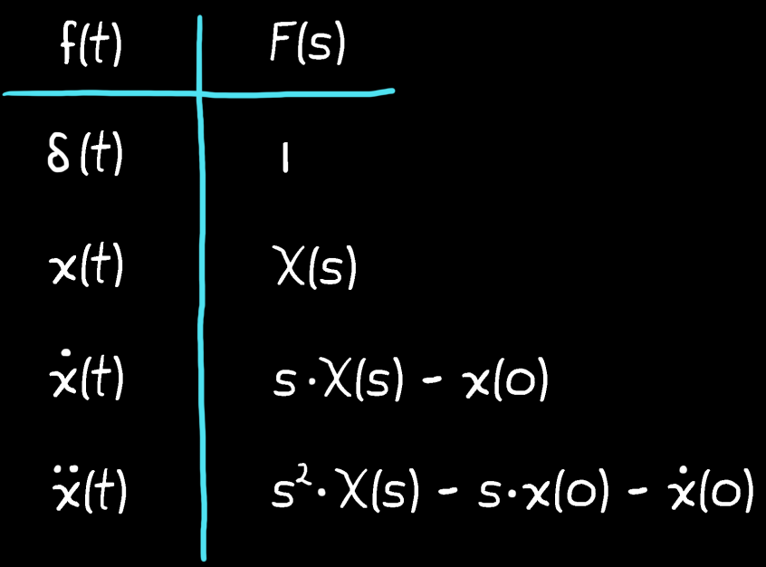

Laplace transform integration do not need to be done by hand. It has been solved for most common terms many times before and collected into tables.

Laplace transform of a few common terms that can be found in a table. How is the laplace domain representation of an impulse equal to 1?
The time domain model can be transformed into the s domain by replacing each term with the corresponding s domain equivalent.
Example
Consider a system in the time domain:
$$
m\ddot{x}(t) + b\dot{x}(t) + kx(t) - \delta(t) = 0
$$
Taking the laplace transform, the s domain equivalent would be:
$$
(ms^2 + bs + k) \cdot X(s) - 1 = 0
$$